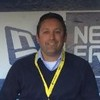

I'm Accessibility Developer/Tester/Teacher from India, working in Accessibility and web development.
I enjoy finding accessibility issues and fixing them seamlessly, scaling across pages without afecting page performance.
Also i'm good at Program and Project Management, Accessibility Management, and Team Leadership
What i'm doing
Accessibility Audit
QUality Accessibility report and VPAT.
Accessibility development
Fix sites, with javascript
Speaking
Public speaking on various a11y topics
Events and Road shows
Conduct events and road shows/p>
Testimonials
Victor Tsaran
Sr. Accessibility Program Manager (PayPal)
My interactions with Nawaz go all the way back to yahoo! although we did not work as close then. However, when I joined PayPal to lead the accessibility team, Nawaz joined us to help advance the accessibility initiatives. During the two years we worked together, thanks to Nawaz's technical skills, we released 3 open source projects, one of which, the Skipto Menu, is still being actively used today by websites.
During our work together I could not stop appreciating Nawaz's creativity, respect and genuine care for accessibility, his engineering neatments, enthusiasm for new ideas, and him being a good team player.
Some of Nawaz's unique traits are adaptability, positive attitude and the need to do something good in the world.
I would highly recommend Nawaz to any employer looking for an individual with a wide variety of skills and an all-round good person!
Edwin Aoki
Vice President and Technology Fellow, Architecture (PayPal)
The first thing you notice about Nawaz is his passion for inclusion. His desire to make technology accessible to all has made him an ally and advocate for those with disabilities, and is evidenced through his work to raise awareness, educate others, and enable developers to build accessible applications.
Despite his experience and obvious expertise, Nawaz remains humble and eager to help engineers who may be new to this space. He developed tools used across the company to automate the process of incorporating accessibility into our products and services. But he’s had an impact beyond engineering and beyond PayPal through presentations and outreach that create the empathy, understanding, and motivation to act.
During my time overseeing the accessibility function at PayPal, I was privileged to work with and learn from Nawaz. He embodies PayPal’s core values of inclusivity and collaboration and helps us to fulfill our mission to make financial services truly accessible to everyone.

Marc Kocher
Vice President and Technology Fellow, Architecture (PayPal)
Prem is my goto person for web and mobile accessibility concerns. His deep knowledge and understanding of accessibility laws, guidelines, and recommendations are perfectly matched with his front-end engineering abilities. I recognize Prem as one of the preeminent accessibility engineers in the world. His talents applied will ensure that an experience is usable for EVERYONE regardless of abilities.
Naveen Kumar Matta
Program Manager (PayPal)
Nawaz is a good leader and good motivator. I was always eager to learn the technical know-hows of various components. Applied Empathy skills and one team Behavior throughout the job. He is also a natural collaborator getting along with people and resolving technical issues.
Chandramouliswaran (Mouli)
Vice President AI (PayPal)
Nawaz is someone who cares about Diversity and Inclusion and is a big proponent of Accessibility in Tech. Over the years he has been actively involved in building solutions that are inclusive in nature. He has also been an ambassador within the company, sharing his knowledge and creating awareness with other technologists. If you are looking to hire someone with experience in Accessibility in Tech, Nawaz would be a great fit.
James Carleton
Sr. User Experience Designer 2 - Design Systems (PayPal)
Nawaz has been a critical advocate for Accessibility at our company for many years. His dedication and partnership with engineering groups to improve accessible practices in development has been essential to maintaining high standards for assistive technology support in our products. Anytime we needed an answer to a technical question about web and native app accessibility Nawaz was quick to provide guidance and help the team come to a solution that matched our accessibility goals and served our diverse range of customers. As part of the design system team I frequently relied on his expertise and influence to help us build accessible foundations into our system design and coded components. Over the years working with Nawaz, the influence of accessibility grew tremendously. It started as a minor effort which was only focused on avoiding legal risk. With his help that small effort grew into a strong team of PMs and engineers with a mature program integrated into our standard practices for any new product/feature efforts.
Thanks for all your hard work and collaboration Nawaz.
Cindy Ta
Product Manager, Accessibility(PayPal)
Nawaz is very passionate about accessibility and inclusion. He is eager to share any new learning about accessibility through posting on our Slack channels. He has much knowledge about accessibility and wants to share it with everyone. When there is a web accessibility question asked, he often chimes in with his thoughts on it and helps resolve the issue. He worked closely with the design system team to ensure that the components being built were accessible. This job was important as many teams use the design system.
Rtn. Srinivasu Chakravarthula
Senior Accessibility Lead (PayPal)
Nawaz is a passionate individual, always willing to help others. His contribution for PayPal products in general and open source work such as Bootstrap Accessibility Plugin, SkipTo plugin in particular is commendable. He is one such person who works hard and bring in change to the world. He is an awesome person to work with!
Swamy Seetharaman
Director of Engineering (Yahoo! Inc)
Nawaz had a good mix of domain knowledge and technical skills and and was the go-to person certain business critical components in HotJobs. Nawaz is hard working, committed and his sense of responsibility is a stand out. Nawaz is very approachable and he collaborated very well with the cross functional teams.
Srini Deeduvanu
Director of Engineering (Yahoo! Inc)
Nawaz is one of those people who have product managers queuing up to them. He is always open to finding a better way to do things and upgrading himself in the process. He has a never say no attitude and takes up delivery of assigned tasks with utmost sincerity. He doesn’t shirk his work responsibilities. Highly committed and technically sound.
Himanshu Verma
Engineering Manager(Yahoo! Inc)
Nawaz worked in my team for over 2 yrs and has been one of the people whose performance graph always kept going up. He has good technical skills in almost all aspects of web development and a great attitude to accompany and will be a good asset to any team.
Jay Bergesen
Staff Interaction Designer(Yahoo! Inc)
Nawaz is a talented engineer and an excellent collaborator. Nawaz works tirelessly to ensure all implementation details are resolved. He has a unique sensitivity to getting things built right. It was always a pleasure finding out Nawaz would be the engineer developing what I had designed.
Sachin Rajshekhar Samson
Business COnsultant (SRIT India Pvt. Ltd)
I have always appreciated Nawaz for his ability to code on PHP and managing projects. In today's environment there are very few professionals who have the ability to understand complex scenarios with ease and give clients the desired output. I sincerely hope and look forward to work with Nawaz once again as he is an asset for any project.
Template
The first thing you notice about Nawaz is his passion for inclusion. His desire to make technology accessible to all has made him an ally and advocate for those with disabilities, and is evidenced through his work to raise awareness, educate others, and enable developers to build accessible applications.
Despite his experience and obvious expertise, Nawaz remains humble and eager to help engineers who may be new to this space. He developed tools used across the company to automate the process of incorporating accessibility into our products and services. But he’s had an impact beyond engineering and beyond PayPal through presentations and outreach that create the empathy, understanding, and motivation to act.
During my time overseeing the accessibility function at PayPal, I was privileged to work with and learn from Nawaz. He embodies PayPal’s core values of inclusivity and collaboration and helps us to fulfill our mission to make financial services truly accessible to everyone.
Master of Business Administration (MBA) in Project Management
Annamalai University
1994 — 1998
Bachelor of Engineering
Experience
Accessibility Consultant - UserWay
2012 — 2023
Consulting, Auditing, Leading Dev team, Configure Management
Accessibility Evangelist - PayPal
2013 — 2015
Transform PayPal’s accessibility to keep it usable for everyone irrespective of their abilities on web and touch devices.
-- Drive technical accessibility of the company and its acquired properties namely, Zettle, HyperWallet, and Braintree through training and development, while maintaining the latest guidelines and recommending solutions.
-- Coordinate with cross-functional teams including, Design, Full stack developers, and quality control.
-- Train and motivate people via training, while retaining WCAG guidelines, policies, and patterns.
-- Set up and execute empathy labs (https://github.com/mpnkhan/empathylab) similar to a user research lab, persuading senior leaders and people post training to experience how People with disabilities (PWD) use the web
-- Devised inclusive booths in/out of the company on several occasions for marketing accessibility and creating awareness.
-- Deliver public presentations to raise awareness on accessibility in Delhi, Gurgaon, Bangalore, and Chennai, available at https://github.com/mpnkhan/Talks; perform sport accessibility audits and provide feedback/solutions.
Technical Lead - Yahoo!
2006 — 2009
-- Functioned with Yahoo! HotJobs closing high-priority tickets with zero escalations; significantly improved revenue by simplifying the Self Service Channel Front End User Experience and Electronic Quoting System.
-- Performed code reviews from a front-end perspective considering security and performance, while advocating best practices.
-- Procured fundamental knowledge in PHP4 to PHP5 migration by migrating the entire Yahoo! HotJobs Career Portal.
-- Developed a Self-Service User Interface, named Sizzle, thereby increasing the funnel conversion and revenue.
-- Introduced new products on Self Services like Resume Search and HotHire and a few bundled products.
-- Participated in 6 Innovation events and one of them, called Buzz widgets, made it to the final in Bangalore hack day event.